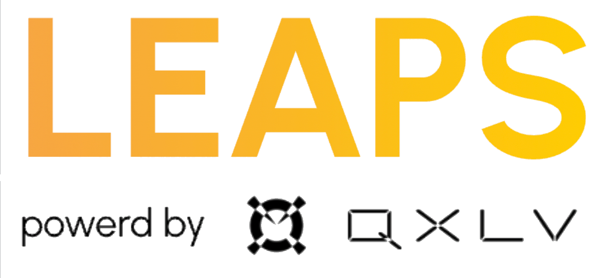

言葉や行動に表れる情報から、その奥にある状態やニーズを読み解く。私たちは、多様なデータをもとに、AIエージェントが指示の背後にいる人まで理解できるようにします。
コンピューターは進化するたびに、私たちの暮らしに身近なものになってきました。次の進化を決めるのは、処理の速さや規模だけではありません。使う人を、どこまで深く理解できるかです。
テキスト、音声、画像を扱えるようになっても、そこに表れる情報だけで、その人を十分に理解できるわけではありません。
明確に伝えられた情報だけに頼っていては、人の複雑な状態や背景を捉えきれず、本当に必要なことを見逃してしまいます。
人を十分に理解しないままAIが自律的に行動すれば、本人の意図にそぐわない判断や、望まない方向への誘導につながるおそれがあります。
あらゆるAIエージェントに組み込める、人を理解するための共通基盤。
言葉、行動、生体情報、周囲の環境など、さまざまなデータから得られる観測可能な情報。
その人の今の状態。何を表現し、何を意図し、どのように行動しているかを捉えます。
今の状態を理解する手がかりとなる、その人固有の背景や継続的な文脈。やり取りのたびに理解をリセットせず、時間とともに深めていきます。
人への理解を、AIエージェントの行動につなげる基盤です。多様なデータから、言葉には表れない状態やニーズを推定し、エージェントが判断に活かせる形で提供します。
ミドルウェアとして、用途に応じた形で連携できます。エージェントと並行して動作する方式、内部の処理に組み込む方式、複数のエージェントを統括する方式に対応します。
API・SDK・MCPに対応し、わずか1行のコードで接続できます。複雑な処理はCerenityが担い、推論処理を厳格な保護のもとで行います。
Cerenity Innovationがこれまでに採択されたプログラムをご紹介します。
